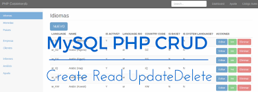
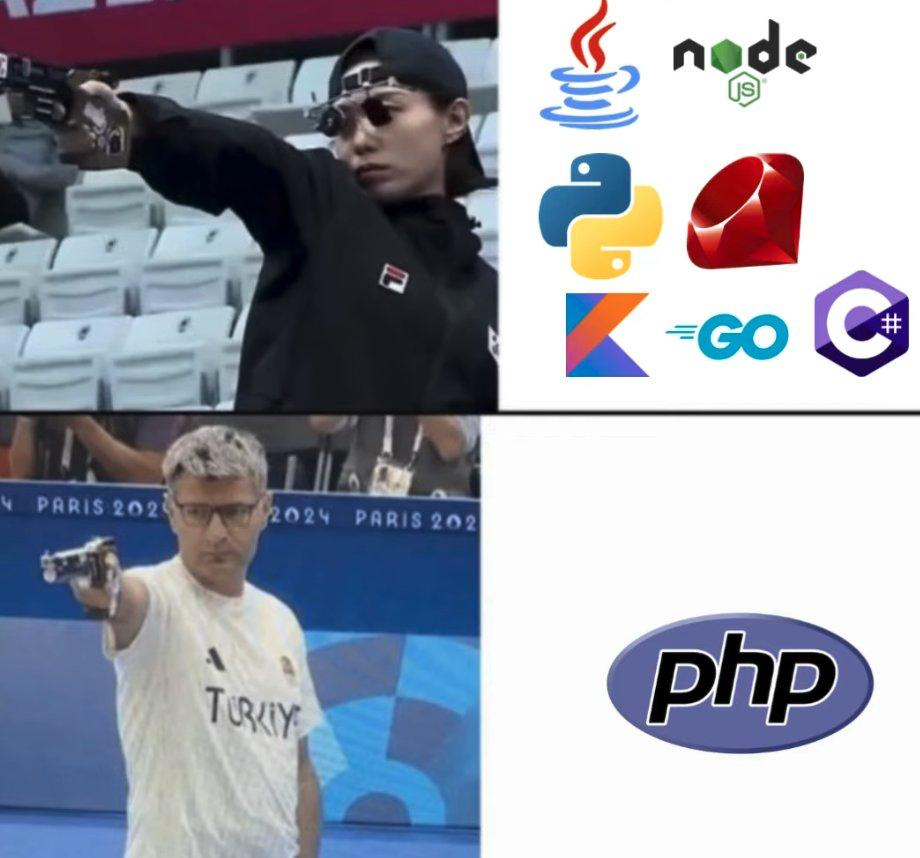

Objetivos & Entregable UD5 Herramientas Web
Vamos a realizar un proyecto con todo lo aprendido en estos temas. Iremos creando y documentando las diferentes versiones cada día, un punto importante a tener en cuenta es:
Llega hasta donde estes seguro
En este proyecto cada alumno podrá avanzar hasta el nivel de complejidad que sea capaz de comprender y dominar.
No todos llegaréis al mismo grado de profundidad, y eso es completamente normal. Lo importante no es abarcarlo todo, sino desarrollar una parte del proyecto con seguridad, entendiendo bien cada paso y siendo capaz de explicarlo.
Es preferible queadaptes tu proyecto a tu propio ritmo y te detengas en el punto donde realmente controles lo que estás haciendo, en lugar de intentar incluir muchas funciones sin comprenderlas. La calidad del aprendizaje está por encima de la cantidad de características añadidas.

1. Proyecto UD5_Estado:
- En este proyecto trabajamos con aplicaciones web que hagan mantenimiento de estado con Sesiones y Cookies y todo lo visto en estas cinco unidades.
Objetivo
El objetivo de esta actividad es desarrollar un sistema que permita loguearse a los usuarios y al que se de visibilidad sólo con algunos de ellos, si se hace peticiones a base de datos, deben serSQLite
- Debe haber mantenimiento de estado y usar cookies y sesiones, a poder ser crear páginas que las muestren
- El usuario admin / admin debe habilitarse, entre al menos 5 usuarios
- debe haber login y logout con comprobación
- un CRUD con paginación de los productos, podemos usar de base los ejemplos de clase
- Contraseñas encriptadas
- Redireccionamiento
Desarrollar de forma ágil y escalable
Escala tu proyecto
Trabaja siemprepor iteraciones , empezando por una versión muy simple y plenamente funcional (MVP: Minimum Viable Product ) que puedas entregar y ve incrementando complejidad en pequeños pasos . No intentes hacerlo todo de golpe.
- Primero asegúrate de que funciona lo básico (estructura MVC, conexión SQLite, login mínimo) y, cuando esa versión esté estable,
- Crea una nueva versión donde añadas solo una funcionalidad más.
- Este enfoque te permitirá detectar errores antes , evitar bloqueos grandes, mantener un código más limpio y comprensible y generar una evolución continua del proyecto.
- Además, te facilitará subir avances diarios a Moodle y justificar claramente cómo has ido mejorando la aplicación.
2. Requisitos del Proyecto UD5
CRUD de login y productos para un negocio
1. Descripción general
Desarrollar una pequeña aplicación web en PHP que gestione el login de usuarios y el CRUD de productos de un negocio concreto (a elegir por el alumno: tienda de informática, librería, cafetería, etc.), aplicando los contenidos trabajados en la unidad:
- Sintaxis básica de PHP
- Programación Orientada a Objetos (POO)
- Patrón Modelo–Vista–Controlador (MVC)
- Acceso a datos con SQLite
- Cookies, sesiones, cabeceras HTTP y autenticación con hash
La aplicación debe basarse en la estructura y ejemplos MVC con login vistos en clase, adaptándolos al contexto del negocio elegido.
2. Requisitos funcionales mínimos
- Gestión de usuarios (login):
- Formulario de registro (opcional) y login .
- Contraseñas almacenadas con hash seguro (por ejemplo,
password_hash/password_verify). - Uso de sesiones para mantener al usuario autenticado.
- Posibilidad de logout que destruya la sesión.
- Control de acceso: solo usuarios autenticados pueden acceder al CRUD de productos.
- Gestión de productos (CRUD):
- Alta de productos (Create).
- Listado de productos (Read) con paginación opcional.
- Edición de productos existentes (Update).
- Borrado de productos (Delete).
- Campos mínimos por producto (orientativo):
- Nombre
- Descripción
- Precio
- Stock
- Categoría (o similar según el negocio)
- Funciones adicionales sobre los datos:
- Al menos una funcionalidad que profundice en el trabajo con los datos, por ejemplo:
- Cálculo de precio total con IVA .
- Cálculo de valor total del stock .
- Listados filtrados (por categoría, rango de precio, productos sin stock…).
- Indicadores calculados (por ejemplo, “producto en oferta”, “stock bajo”, etc.).
- Esta información calculada debe mostrarse en alguna vista (por ejemplo, en el listado o en una ficha de producto).
3. Requisitos técnicos
- Lenguaje y sintaxis:
- Uso correcto de la sintaxis básica de PHP (variables, estructuras de control, funciones, includes/require, etc.).
- Separación clara entre lógica y presentación (no mezclar HTML y lógica compleja en el mismo archivo).
- Programación Orientada a Objetos:
- Uso de clases para los modelos (por ejemplo,
User,Producto). - Al menos un controlador implementado como clase (por ejemplo,
ProductoController,AuthController). - Métodos bien definidos para cada operación (listar, crear, editar, eliminar, etc.).
- Modelo–Vista–Controlador (MVC):
- Estructura de carpetas similar a la vista en los ejemplos:
/models/views/controllers/configu otro para la configuración/DB.
- Un punto de entrada (
index.php) que reciba la acción y llame al controlador correspondiente. - Vistas separadas para:
- Formularios de login / registro.
- Listado de productos.
- Formulario de alta/edición.
- Mensajes de error o confirmación (pueden integrarse en las vistas anteriores).
- Acceso a datos con SQLite:
- Uso de SQLite como motor de base de datos.
- Acceso mediante PDO (recomendado).
- Creación de al menos dos tablas:
users(o similar) para credenciales.products(o similar) para los productos.
- Archivo de configuración de conexión (
config.phpo similar). - Sesiones, cookies, cabeceras, autenticación:
- Uso de sesiones para gestionar el login.
- Uso de cookies al menos para una de estas opciones:
- Recordar el nombre de usuario.
- Preferencias simples (tema, idioma, etc.).
- Uso de cabeceras HTTP para:
- Redirecciones tras login, logout o operaciones de CRUD (
header("Location: ...")).
- Redirecciones tras login, logout o operaciones de CRUD (
- Autenticación con hash de contraseña :
- No se permite guardar contraseñas en texto plano.
4. Profundización en funciones sobre datos
El proyecto debe incluir al menos una funcionalidad extra donde el alumno:
- Implemente funciones propias en PHP para trabajar con los datos (por ejemplo, una función que reciba un array de productos y devuelva estadísticas, totales, medias…).
- Transforme o calcule valores derivados que luego se muestren en las vistas:
- Total de productos.
- Media de precios.
- Importes con IVA.
- Porcentaje de productos en una determinada categoría, etc.
Esta parte debe estar claramente comentada en el código y explicada en la documentación.
Puedes profundizar aquí todo lo que el tiempo te permita
5. Uso de ejemplos de clase
- El proyecto debe partir del código de ejemplo visto en clase (MVC + login) y adaptarlo al caso del negocio elegido.
- No se trata de copiar y pegar sin cambios, sino de:
- Cambiar el contexto (productos, atributos…).
- Adaptar las vistas.
- Ampliar funcionalidades.
6. Restricciones sobre uso de IA
- El abuso de cualquier IA (ChatGPT, Copilot, etc.) sin comprender lo que se hace se considerará plagio .
- El alumno debe ser capaz de:
- Explicar el funcionamiento de su código.
- Justificar las decisiones tomadas (estructura, funciones, consultas SQL…).
- El código claramente no entendido, incoherente con el nivel del curso o que no se pueda explicar en una defensa, podrá considerarse no auténtico .
7. Requisitos de documentación y entregas
- Seguimiento diario en Moodle:
- Cada día de trabajo, el alumno debe subir a los comentarios de la tarea en Moodle un PDF con el avance del día .
- No se deben borrar los PDFs anteriores: se debe ver la evolución del proyecto.
- Documentación final del proyecto:
- Debe existir un archivo de documentación llamado
ProyectoUD5.md. - Este documento (o versión exportada a PDF/MD incrustado) deberá contener:
- Breve descripción del negocio y del objetivo de la aplicación.
- Estructura de carpetas y explicación del MVC.
- Descripción de las tablas de la base de datos.
- Explicación del proceso de login y gestión de sesiones/cookies.
- Explicación de la funcionalidad extra de cálculo/transformación de datos.
- Capturas de pantalla (en formato imagen) de los bloques de código más importantes :
- Controladores principales.
- Modelos (User, Product).
- Conexión a la base de datos.
- Funciones de autenticación.
- Función/es de cálculo o transformación de datos.
- Referencias al código que se mostrará en la videopresentación.
- Videopresentación técnica:
- La documentación debe servir como base para una videopresentación técnica donde el alumno:
- Explique las partes clave del proyecto.
- Muestre las capturas de código.
- La videopresentación debe quedar referenciada o incrustada desde
ProyectoUD5.md(por ejemplo, mediante un enlace, QR o referencia clara al archivo de vídeo).
Si quieres, en otro mensaje puedo ayudarte a transformar estos requisitos en un enunciado “bonito” para Moodle o en una rúbrica de evaluación.
3. PHP unidades 2,3,4 y 5
Breve resumen de algunos de los conceptos de PHP más importantes vistos hasta ahora
- Sintaxis básica de PHP
- Variables y tipos básicos
- Operadores (aritméticos, comparación, lógicos)
- Estructuras de control (
if,else,elseif,switch,for,foreach,while) - Funciones propias
- Inclusión de archivos (
include,require) - Uso básico de superglobales (
$_GET,$_POST,$_SESSION,$_COOKIE,$_SERVER) - Programación Orientada a Objetos (POO)
- Clases y objetos
- Propiedades y métodos
- Constructores
- Modificadores de acceso (
public,private,protected) - Organización del código en modelos y controladores
- Modelo–Vista–Controlador (MVC)
- Separación en carpetas:
models/,views/,controllers/,config/ - Punto de entrada (
index.php) que decide qué controlador/acción llamar - Controladores como clases con métodos para cada acción (listar, crear, editar, eliminar…)
- Vistas como plantillas PHP/HTML sin lógica pesada
- Modelos encargados de hablar con la base de datos
- Acceso a datos
- Uso de PDO para conectar con la base de datos
- Conexión centralizada en un archivo de configuración
- Consultas preparadas (
prepare,bindParam/bindValue,execute) - CRUD (Create, Read, Update, Delete) sobre tablas
- Manejo básico de errores en la conexión y en las consultas
- SQLite
- Uso de SQLite como base de datos en archivo
- Creación de tablas (
users,products, etc.) - Ventajas para proyectos pequeños y de aula (no requiere servidor independiente)
- Sesiones
- Inicio de sesión con
session_start() - Almacenamiento de información del usuario autenticado en
$_SESSION - Cierre de sesión y destrucción de la sesión (
session_unset(),session_destroy()) - Cookies
- Creación de cookies con
setcookie() - Lectura de cookies a través de
$_COOKIE - Uso para recordar datos sencillos (nombre de usuario, preferencias…)
- Cabeceras HTTP
- Redirecciones con
header("Location: ...") - Cambios de cabecera (
Content-Type, etc.) cuando es necesario - Autenticación con hash
- Formularios de login
- Almacenamiento de contraseñas con
password_hash() - Verificación de contraseñas con
password_verify() - Control de acceso a páginas solo para usuarios autenticados
- Tratamiento y transformación de datos
- Recepción y validación de datos de formularios
- Filtrado seguro de entrada (
filter_input, validaciones propias) - Cálculo de datos derivados (totales, medias, IVA, valor de stock, etc.)
- Formateo de datos para mostrarlos en las vistas (números, precios, cadenas…)
4. PERSONALIZACIÓN
Personalizaremos el proyecto con las siguientes temáticas/alumnado:
| José Antonio - Supermercado: Alimentos frescos, enlatados, productos de limpieza, bebidas |
|---|
| Dani - Tienda de muebles: Sofás, mesas, sillas, decoración del hogar |
| Miguel - Tienda de bricolaje: Herramientas, materiales de construcción, pinturas, jardinería |
| Isaac - Tienda de juguetes: Juguetes para niños, juegos de mesa, muñecas, modelos a escala |
| Manuel - Tienda de alimentos orgánicos: Frutas y verduras orgánicas, productos sin gluten, suplementos |
| Alejandro - Tienda de antigüedades: Muebles antiguos, objetos de colección, obras de arte |
| Juan Jesús - Tienda de vinos y licores: Vinos, cervezas artesanales, licores, copas |
| Guerola - Tienda de artículos para el hogar: Utensilios de cocina, textiles, decoración |
| María - Tienda de bicicletas: Bicicletas, accesorios, ropa para ciclistas, herramientas |
| Sañvador - Tienda de artículos de viaje: Maletas, accesorios de viaje, guías turísticas |
| José Andrés - Librería: Libros, revistas, material de oficina, artículos de papelería |
| Francisco- Tienda de productos digitales: Software, aplicaciones, música, juegos en línea |
| Juan David - Tienda de ropa: Ropa para hombres, mujeres o niños, accesorios, calzado |
Documentación del Proyecto
Crea un archivo ProyectoUD5.md en la raíz del proyecto que contenga la siguiente información:
capturas de código
Siempre que expliques el código, añade capturas de código en formato imagen a la documentación

Esquema breve que puedes usar para la documentación del proyecto (ProyectoUD5.md)
1. Portada
- Título del proyecto
- Autor/a
- Fecha
- Curso / Módulo
2. Descripción del proyecto
- Tipo de negocio elegido
- Objetivo general de la aplicación
- Funcionalidades principales del CRUD y del login
3. Estructura del proyecto (MVC)
- Explicación breve de la estructura de carpetas
- Diagrama simple del flujo MVC
- Descripción del punto de entrada (
index.php)
4. Base de datos (SQLite)
- Tablas creadas
- Campos y tipos de datos
- Justificación de algún campo si procede
- Captura de la creación de tablas
5. Autenticación
- Funcionamiento del login
- Hash de contraseñas
- Gestión de sesiones
- Uso de cookies (si procede)
- Capturas de los fragmentos clave del código
6. CRUD de productos
- Descripción de cada operación (Create, Read, Update, Delete)
- Explicación del flujo de cada acción
- Capturas de los métodos principales del controlador y el modelo
- Capturas de las vistas más importantes
7. Funcionalidad adicional (cálculo o transformación de datos)
- Qué dato calculado o transformado se ha implementado
- Cómo se calcula
- Código clave (en captura)
- Ejemplo real mostrado en la interfaz
8. Problemas encontrados y soluciones
- Errores comunes durante el desarrollo
- Cómo se resolvieron
- Cambios relevantes entre versiones
9. Conclusiones del proyecto
- Qué se ha aprendido
- Qué mejorarías en versiones futuras
10. Videopresentación técnica
- Enlace o Video incrustado que debe ser alojado en Drive o similar
-
Breve guía de lo que se explica en el vídeo
-
En el readme del proyecto debe ir un video incrustado explicando los detalles técnicos implementados, no confundir con un video a nivel de usuario.
- RECUERDA: Lenguaje técnico y no de usuario, comentando los aspectos del lenguaje adquiridos
- Debe desglosarse qué herramientas, técnicas, clases, métodos etc se han implementado durante el proyecto.
- También se pueden comentar los fallos y las posibles mejoras
- Hay que subir el enlace del repositorio a Moodle.
- Presenta el código y las nuevas características aprendidas, de unos 5 minutos aprox
Entregable
Se ha de entregar en el tiempo estimado en Moodle.
